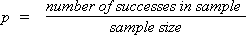

Population proportions and probabilities
Categorical data are usually treated as a random sample from some population. We concentrate on a single category which we will call success and we collectively call the other categories failures. The population proportion of successes is denoted by π. It is also the probability that a single randomly selected value from the population is a success.
We are interested in estimating an underlying probability, π. Although it is more general to treat π as a probability, it is usually easier to interpret π as a 'population proportion'.
Parameter estimate and error
The sample proportion of successes is denoted by p and is an estimate of π.

Since p is based on a random sample, it varies from sample to sample and has a distribution. The estimation error is:
error = p - π
Since π is unknown, we never know the value of the error, but we can find its approximate distribution. This will allow us to assess the likely size of the error.